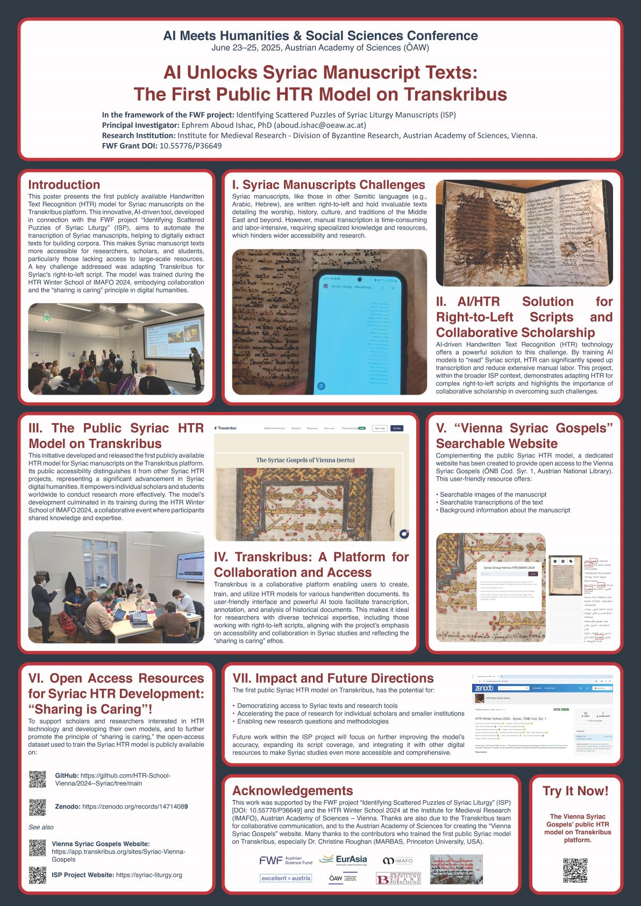
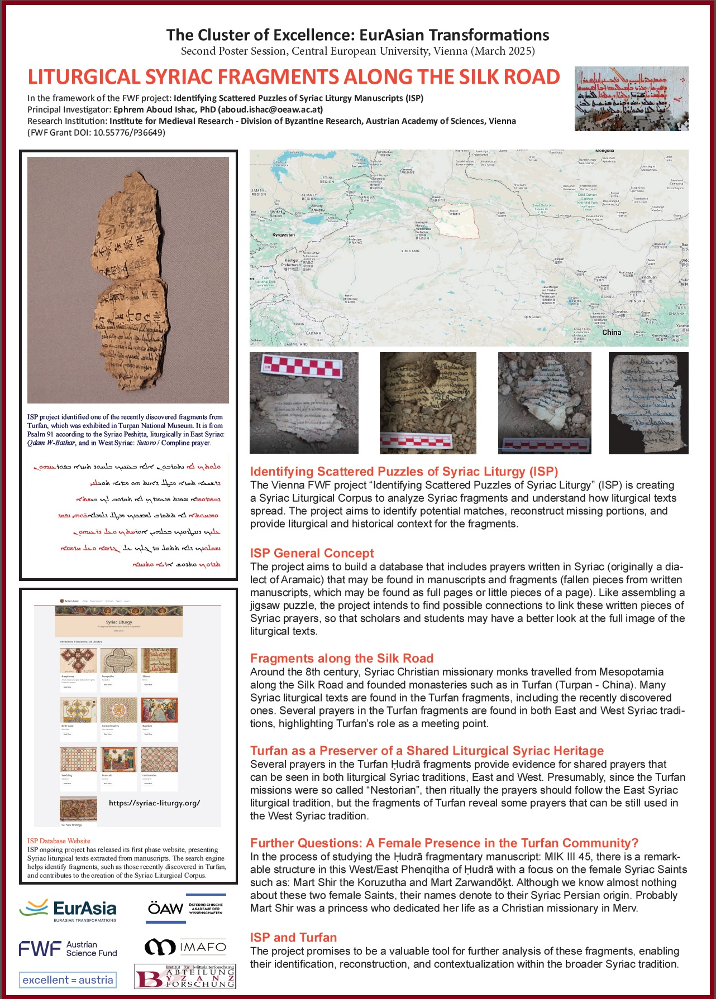

Publications
Ishac, E.A., “Assemani and the Syrian ‘Orthodox’ Fathers” Parole de l’Orient 51 (2025), 329-343, Kaslik.
Ishac, E.A., “Synodality and Liturgy: The First Ecumenical Council of Nicaea 325 in the Syriac Tradition” The Liturgical Magazine 54 (2025) 156-169 (in Arabic).
Ishac, E.A., “Expensive Blessings in the Syriac Liturgical Tradition” On Earth as in Heaven? Liturgy, Materiality, and Economics, edited by Melanie C. Ross, Collegeville, Minnesota: Liturgical Press 2025, pp. 153-179.
Ishac, E.A., “The First Ecumenical Council of Nicaea 325 in Syriac Synodal Politics” Annales Historiae Conciliorum 53 (2023), pp. 69-86. [published in December 2024]
Ishac, E.A., “Manuscript Without Borders: Syriac Migrating Written Heritage” Mfaḥmono Kashiro: Perspectives on the Syriac Bible in Honor of Andreas Juckel, edited by George Anton Kiraz and Hannah Stork, (Gorgias Eastern Christian Studies 71), Piscataway, NJ: Gorgias Press, 2024, pp. 35-56.
Ishac, E.A., “A ‘Colophon’ or a ‘Chronicle’? A Lengthy Garshuni-Arabic Colophon” Literary Snippets: A Colophon Reader, edited by Sabine Schmidtke and George Anton Kiraz, Gorgias Press 2024, pp. 101-145.
Ishac, E.A., “Liturgy in Times of Disasters in the Prayers of the Syriac Church of Antioch,” The Liturgical Magazine 51 (2023), [in Arabic], pp. 21-30.
Ishac, E.A., “In Colophons and Margins of the Syriac Liturgical Manuscripts” Literary Snippets: Colophons Across Space and Time, edited by Sabine Schmidtke and George Anton Kiraz, Gorgias Press 2023, pp. 187-199.
Presentations
Nov. 2025: Respondent to Dr. François Pacha Miran's lecture “Shaping the Lectionary: Liturgical Readings and the Genesis of Syriac Manuscript Illumination (11th–13th c.)”, Yale Late Antique and Byzantine Art and Architecture Lecture Series (online). University of Yale, USA.
Nov. 2025: “Syriac Manuscripts Crossing via Jerusalem” Made in Jerusalem: Greek and Syriac Manuscripts Produced in the Holy Land, Johannes Gutenberg-Universität Mainz. Mainz, Germany.
Sep. 2025: “The Syriac Nicaea 325 in a New Critical Edition” 1700th Anniversary of the Council of Nicaea International Conference, Catholic University of Erbil. Ankawa, Iraq.
Sep. 2025: “Syriac Synodal Canons Crossing Borders” Legal Texts on the Move. Normative Texts Crossing Boundaries in the Medieval World International Conference, Austrian Academy of Sciences. Vienna, Austria.
Sep. 2025: “Mapping Connections in Early Medieval Syriac Colophons” Closing ERC Conference of the RELEVEN Project: Re-evaluating the Eleventh Century - Movements, Connections, and Perspectives, University of Vienna. Vienna, Austria.
Sep. 2025: Respondent to Carlo Emilio Biuzzi's lecture “A Codicological Enquiry into Syriac Legal Manuscripts from the 6th to the 8th Century”, in the framework of the ERC Project: RevIdEM, Austrian Academy of Sciences. Vienna, Austria.
July 2025: “Syriac Manuscripts as Agents of Mobility: Tracing Cultural Transmission through Colophonology” Moving Byzantium, I: Manuscripts and Arts at the Margins of the Byzantine World, Leeds International Medieval Congress (IMC) 2025, University of Leeds. Leeds, UK.
June 2025: “The Presence of Nicaea 325 in Syriac Liturgical Prayers” Nicaea and the Church of the Third Millennium: Towards Catholic-Orthodox Unity, Pontifical University of St. Thomas Aquinas. Rome, Italy.
May 2025: “Who is the Public in a Digital Age? Democratization of HTR—Syriac as Example” The Digital Orientalist's 2025 Virtual Conference: AI and the Digital Humanities for the Study of Asia, Africa, and Oceania, (keynote lecture).
May 2025: “Public Hand-Written Text Recognition (HTR) for Syriac with Transkribus: State of the Art”, Freie Universität Berlin, Seminar für Semitistik und Arabistik. Berlin, Germany.
April 2025: “Towards a New Critical Edition of the Syriac Texts of Nicaea 325”, Nicaea 2025: Event, Context, Reception. International Symposium, Augustinianum and Angelicum. Rome, Italy.
Feb. 2025: “Syriac Liturgical Heritage in Egypt: A General Overview”, in the 11th International Symposium of the Saint Mark Foundation on Coptic Liturgy. Cairo, Egypt.
Jan. 2025: “Project First Results of ISP: Identifying Scattered Puzzles of Syriac Liturgy”, in the workshop: Byzantine Prayer Books (Euchologia). Austrian Academy of Sciences Vienna, Austria.
Oct. 2024: “Liturgical Syriac Fragments along the Silk Road”, in The International Conference on Turfan Study: New Developments on the Research of Jingjiao. Turpan, China.
Sep. 2024: “Dialogue and Fire in a Fragmentary Syriac Martyrdom Narrative”, Oxford Interfaith Forum. Chair: Professor Sebastian Brock, University of Oxford. Oxford, UK.
Sep. 2024: “Kothubo Suryoyo: A Syriac Scribe ‘from Athur and Nineveh’: Mattai Bar Fawlos”, in the First Athra Syriac Symposium, organized by the General Directorate of Syriac Culture. Erbil.
July 2024: “Syrian Orthodox Church Fathers in Alexandria: Severus of Antioch and Jacob of Edessa”, (two lectures for Tyrannus Orthodox Theological Seminary). Alexandria, Egypt.
June 2024: “Paratexts in Syriac Liturgical Manuscripts”, in Paratexts in Premodern Writing Cultures, organized by Database of Byzantine Book Epigrams, Ghent University. Ghent, Belgium.
May 2024: “Syriac Liturgical Texts with Multi-Touch Attributions”, in Misattributions and Forgeries in Middle Eastern Manuscript Traditions, Institute for Advanced Studies - Princeton (IAS) and Institute for Medieval Research (IMAFO), Austrian Academy of Sciences. Vienna, Austria.
Oct. 2023: “Nicaea 325 in the East and West Syriac Synods”, in From Ctesiphon to Toledo: A Comparative View on Early Church Councils in East and West, Central European University. Vienna.
Posters
June 2025: Poster presentation in the international conference AI meets Humanities & Social Sciences, 23-25 June 2025. Poster title: "AI Unlocks Syriac Manuscript Texts: The First Public HTR Model on Transkribus", Austrian Academy of Sciences, Vienna, Austria.
March 2025: Poster presentation in 2nd Poster Session, Cluster of Excellence: EurAsian Transformations, 21 March 2025. Poster title: "Liturgical Syriac Fragments along Silk Road", Central European University, Vienna, Austria.
